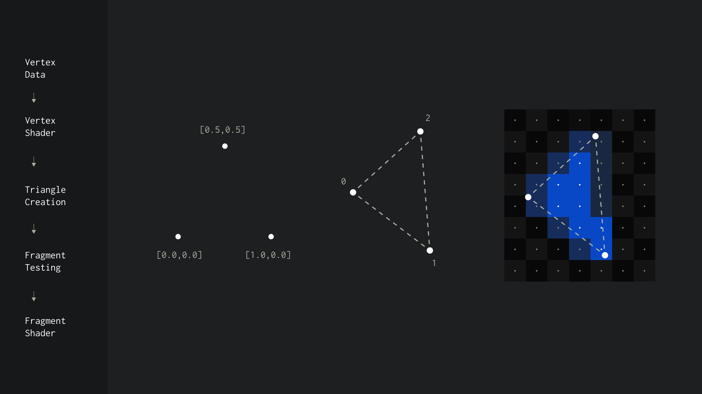

Render Pipeline
The stages for turning the 3D vertices of our mesh into 2D screen pixels is called the 'render pipeline'.
Shaders
We control part of the pipeline by using shaders. Shaders are small programs made up of two parts, a vertex shader and a fragment shader. Shaders are written in a language called GLSL.
Vertex Shader
A vertex shader is responsible for taking the vertices of a mesh and moving them to their final position. The vertex shader is run once for every vertex that exists on the mesh.
//attribute vec3 position; -- supplied by THREE
//uniform mat4 modelMatrix; -- supplied by THREE
//uniform mat4 viewMatrix; -- supplied by THREE
//uniform mat4 projectionMatrix; -- supplied by THREE
void main()
{
// position is turned into a vec4 first
// the extra '1.0' on the end is needed
// for the matrix math to work
vec4 p = vec4(position, 1.0);
// apply the objects movement transform
p = modelMatrix * p;
// apply the camera transform
p = viewMatrix * p;
// apply the camera perspective distortion
p = projectionMatrix * p;
gl_Position = p;
}
Behind the scenes transforms are stored as an array of 16 numbers call a matrix. THREEjs automatically supplies some of the common matrices to the shader for us. External variables supplied to a shader are called uniforms.
Fragment Shader
Any screen pixel that is covered by a triangle from the previous stage will trigger the execution of the fragment shader. It's here we can modify the colour and transparency of the result.
void main()
{
// output is RGBA format
gl_FragColor = vec4(1.0, 0.0, 0.0, 1.0);
}
Creating Materials
THREEjs comes with preset materials like the MeshBasicMaterial we've already used. It's also possible to create custom materials using ShaderMaterial like so.
var vertex_shader = "void main() {vec4 p = vec4(position, 1.0); p = projectionMatrix * modelViewMatrix * p; gl_Position = p; };"
var fragment_shader = "void main() {gl_FragColor = vec4(1.0); }";
var material = new THREE.ShaderMaterial(
{
vertexShader: vertex_shader,
fragmentShader: fragment_shader
});
In the next part we'll go over how to load assets like shaders over the network in a much more managable way.